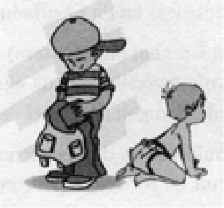
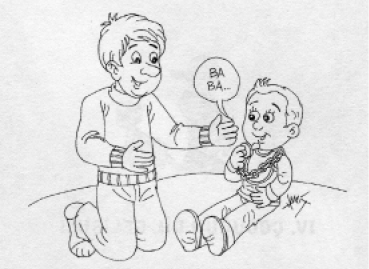
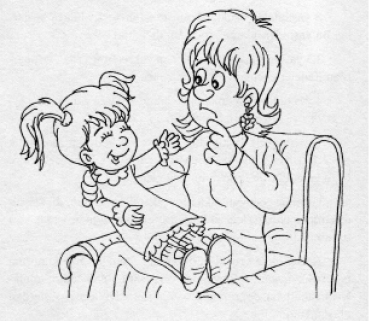

Doğumdan bir aya kadar (Ağlama Devresi): Ağlamanın dışında başka bir sese rastlanmaz.
2-5 ay (Cıvıldama Devresi): Bebek sesini dikkat çekmek için kullanır, “agu” sesleri çıkarır.
6-12 ay (Agulama Devresi): Sesleri kendi kendine tekrar eder ve gerçek heceleri söylemeye başlar.
12 ay (İlk Kelime): İlk kelimesini (baba, dede, mama, nene gibi) söyler. Bir nesneyi, hareketi veya olayı belirtmek için doğru ve tutarlı biçimde ilk defa ilk kelimesini söyler.
İkinci yıl (İki Kelimeli Dönem): On sekiz aylık bebek, tek tek düzinelerle kelimeyi söyler. İkinci yılın sonuna doğru, iki kelimeyi uygun bir şekilde birleştirerek kullanır.

Soruları ses tonuyla ifade etmeye çalışır. Olumsuz ifadeler kullanma eğilimi görülmeye başlar.
Üçüncü yıl (Anlamlı Konuşma): Başlangıçta 2-3 kelimeli cümleler kurabilir. Genellikle bu cümlelerde fiil, nesne, sıfat gibi ayrıntılar yoktur.
Daha sonra gramer kurallarına uymaya çalışır. Basit açıklamalar yapar.
İki buçuk yaşlarındaki bir çocuk 400 kadar kelime bilir. Sonra bu kelimelerin sayısı hızla artar.
Dördüncü yıl (Basit Ama Doğru Konuşma): 1000 kadar kelime bilir. Soru cümleleri yapar. Gelecek zamanı kullanır.
Beşinci yıl: Dil giderek yetişkin konuşmaya benzer. Uzun ve karmaşık cümleler yapılır. İki veya daha fazla fikir bir cümlede doğru ve sıralı olarak ifade edilir.
Kelime dağarcığı 2000’e ulaşır.
Çocukla mümkün olduğu ölçüde sözel iletişim kurulmalıdır. Bunun için:
• Çocuğumuzla doğumdan itibaren konuşmalıyız. Ama bebek gibi değil. En iyisi sakin bir üslupla açık, net kurulmuş basit cümlelerle konuşalım. 1-2 yaşlarındaki çocukla somut ve tekrarlayıcı bir dille konuşmak yararlı olur.
• Bebekler ve çocuklar genelde ne demek istediklerini bilirler, fakat ağızlarından çıkan sesleri ve kelimeleri anlaşılabilir bir hale getirmeyi beceremezler. Bebeğimize bazı basit ve pratik işaretler öğretelim.
Mesela bir yaşındaki çocuğa içme (bir bardağı alıp içiyormuş gibi yapmak) veya yeme (parmakları bir araya getirerek ağza götürmek) faaliyetleri için birer işaret öğretebiliriz. Böylece bebeğimiz acıktığında ya da susadığında bunu bize anlatabilecektir. Dilin gücünü öğrenecek ve kendisini daha da büyümüş hissedecektir.
• 2-2,5 yaş civarındaki çocuklar konuşmaya başlarken çeşitli sorularla motive edilmelidir.
• 3 yaşındaki çocuklar konuşmaktan zevk almaya başlarlar. Bu yaşta “fısıldama” çocuğun dikkatini çekebilir.
• 3,5 yaşlarında değişen, alçalıp yükselen ses tonu ve abartılan ifadeler çocuğun dikkatini çeker.
• 4 yaş dolayında anlama ve bilme seviyesi gelişmiştir. Aynı veya zıt görüşte olma etkilidir.
• 5 yaşlarında çocuk dili kavramada yetişkine benzerlik gösterir. Diğer kişilerle konuşmayı yürütür. Olumlu teklifleri, övgü ve güldürüleri memnunlukla karşılar.
• İletişime çocuğun dikkatini çekerek başlamalı, dikkat süreleri kısa olduğu için konuşma mümkün olduğu kadar kısa tutulmalıdır.
• Çocuğumuza renkleri öğretelim. Renkler bize konuşma becerisi konusunda epey ipucu verecektir.
Renk adları, miniklerin rahatlıkla doğru şekilde telaffuz edebileceği seslerden oluşmaktadır.
• Onlara uzun kelimeler öğretelim.
Çocuklar, birçok yetişkinin zorlandığı uzun kelimeleri sever ve şaşırtıcı şekilde başarıyla telaffuz ederler.
Böylelikle de “dil sevgisi” geliştirirler.
• İletişim sırasında güler yüzlü olalım.
• Bebeğimizin çıkardığı sesleri taklit edelim. Ona ismi ile seslenelim.
• Bütün bunlar için çocukla çok vakit geçirelim, ilgilenildiğini ve sevildiğini hissettirelim.
• Mümkün olduğunca yaşıtları ile birlikte oyun oynamasını sağlayalım. İnsanlar arasında sık sık bulunduralım.
• Konuşma zorluğu gördüğümüzde dikkatini konuşma zorlukları üzerine çekmeyelim.

* * *